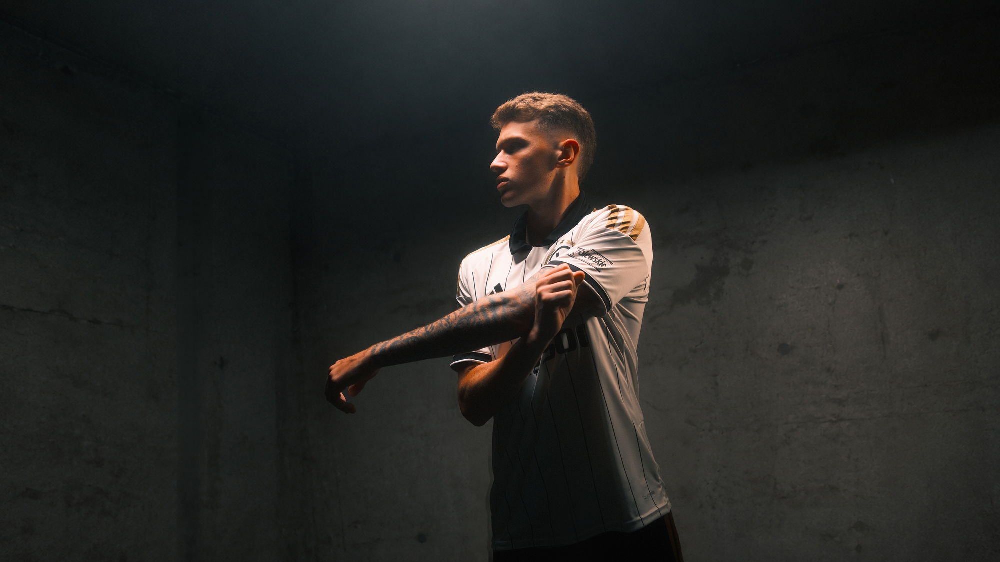
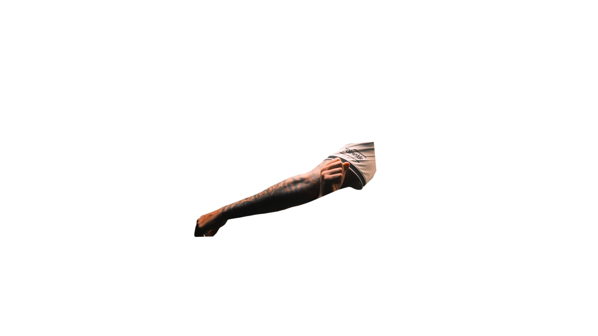

Powrót po rekonstrukcji ACL
Dlaczego o powrocie decyduje symetria siły uda, a nie liczba tygodni od operacji.

Ortopedia, medycyna sportowa i rehabilitacja prowadzone przez sztab medyczny Legii Warszawa.
Zbadaj, wylecz i wróć do formy w jednym miejscu — z zespołem, który na co dzień prowadzi zawodowców.




Wiedza sztabu Legii i nowoczesna diagnostyka — w pięciu krokach.
Pięciu lekarzy i dziewięciu fizjoterapeutów, którzy na co dzień prowadzą pierwszą drużynę, Legia Ladies i Akademię.
Autoryzowany punkt medyczny Legii Warszawa
Krótkie teksty o tym, jak prowadzimy powrót do sportu — pisane przez ten sam sztab, który robi to na co dzień.
Dlaczego o powrocie decyduje symetria siły uda, a nie liczba tygodni od operacji.
Poniżej siedmiu godzin ryzyko urazu rośnie prawie dwukrotnie. Co z tym zrobić w sezonie.
Zestaw prób, który stosujemy u zawodników — i jak wygląda u amatora.
Nie. Prowadzimy zawodowców, amatorów, dzieci z akademii i osoby, które chcą wrócić do biegania bez bólu. Protokoły są te same, różni się intensywność planu.
Nie, przyjmujemy prywatnie bez skierowania. Jeśli masz wcześniejsze wyniki badań, weź je ze sobą — skrócą diagnostykę.
Rezonans, USG i RTG organizujemy w ramach jednego procesu, bez odsyłania do zewnętrznej rejestracji. Konkretny czas do potwierdzenia z klientem.
Tak — zespół wywodzi się ze sztabu medycznego pierwszej drużyny i Akademii Legii Warszawa.
Tak, z osobnym podejściem do zawodników w okresie wzrostu: inne normy obciążeń, inne kryteria powrotu, kontakt z trenerem klubowym.
Piętnaście minut wystarczy, żeby ustalić, czego potrzebujesz i ile to zajmie. Bez skierowania i bez kolejki.